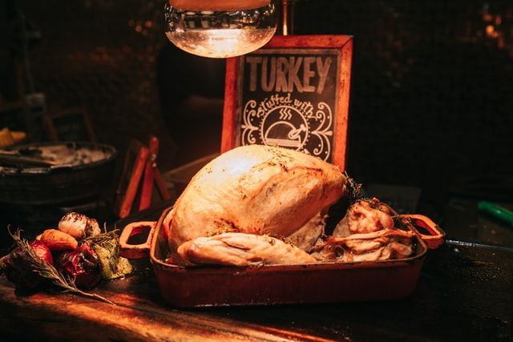
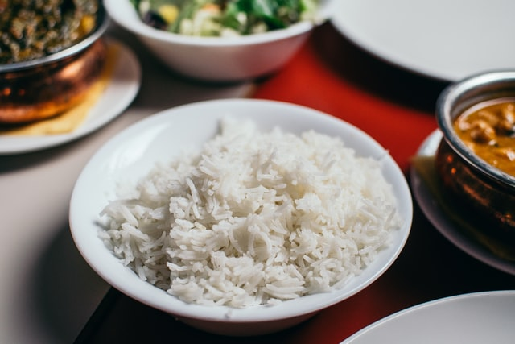
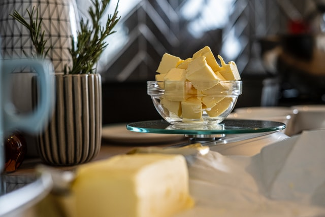

-
🍖 Meat & Fish 🎣
 Photo by SJ. on Unsplash - Turkey
- Chicken
- Tuna
- Luncheon Meat
-
🍚 Grains & Bread 🍞
 Photo by Pille-Riin Priske on Unsplash - Pasta
- Rice
- Bread
- Flour
- Cereal
-
🪔 Oil & Fat 🧈
 Photo by Sorin Gheorghita on Unsplash - Cooking oil
- Butter
-
🥛 Dairy & Eggs 🍳
Photo by Robin Worrall on Unsplash - Milk
- Eggs
- Cheese
- 🍅 Produce 🧅
- Garlic
- Fruit
- Vegetables
- Onions
- Tinned & Dried Produce
- Pulses
- Chooped tomatoes
- Soup
- Fruit, seeds and nuts